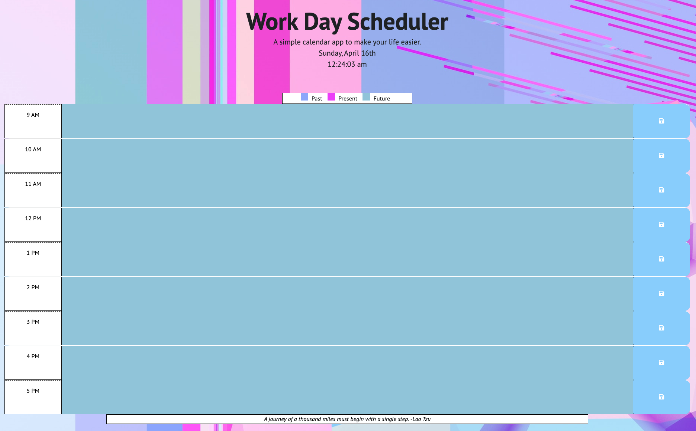

Hi! My name is Chad Kraus and I am a Web Developer, IT Support Specialist, and a Fitness Professional living in Austin, Texas with my two dogs. I have a passion for building websites using HTML and CSS. I am also learning how to make website more interactive by way of JavaScript. When I'm not coding, I enjoy spending my time outdoors, hiking, and going to live music shows.
Professional Portfolio
-

HTML & CSS Code Refactoring Project
-

Work Day Scheduler
Check back for more projects soon!
Kraus Fit
Kraus Fit is a functional, progressive fitness training and nutrition coaching program created by Chad Kraus.